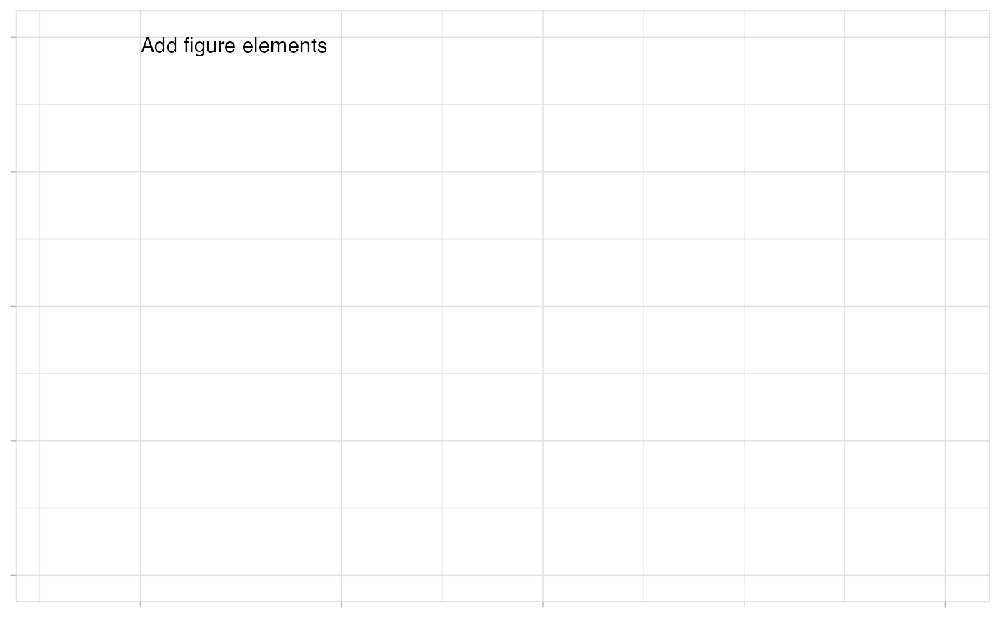

Creates a list of the initialized module state
Arguments
- FM_yaml_file
App configuration file with FM as main section.
- MOD_yaml_file
Module configuration file with MC as main section.
- id
Shiny module ID
- id_UD
ID string for the upload data module used to handle uploads or the name of the list element in react_state where the data set is stored.
- id_DW
ID string for the data wrangling module to process any uploaded data
- session
Shiny session variable
Examples
# Within shiny both session and input variables will exist,
# this creates examples here for testing purposes:
sess_res = FG_test_mksession(session=list())
#> → UD: State initialized
#> → UD: module checksum updated:631af84e28478adc1628dd2c9fb22662
#> → DW: State initialized
#> → DW: module checksum updated:f5866ed2a560dbc564dec9145314b519
#> → DW: module checksum updated:4911af9c225aac6361acea8f26bbfac9
#> → DW: module checksum updated:c9b0caeab52fb59e0dcbb88ee042729a
#> → DW: module checksum updated:b7f3e08819cabbd242f5bebe1290714b
#> → DW: module checksum updated:8d8944be2daf4ea8aa3b1c1c707cee45
#> → DW: module checksum updated:a6367d7e4e002eca11050774144105f8
#> → DW: module checksum updated:4a381cdf6502fe13dca9c009a25b4418
#> → DW: module checksum updated:1050496cc0eca17d51102e051220ec49
#> → DW: module checksum updated:df684a1d4fbbd8bd33749607f9b982c0
#> → DW: module checksum updated:e3054989800f1e8ca24386371b52accc
#> → DW: module checksum updated:3b43dbda29ded3a3a3ef514ccf0c0578
#> → DW: module checksum updated:550d10d9e424d549878ab4ba5343896e
#> → DW: module checksum updated:5d2a75ed77a22f4ff8cc2a0d2bf2e3e5
#> → DW: module checksum updated:0272b5040b80ff35adf3500fdb60d8c7
#> → DW: module checksum updated:173ecf7d96c0bbb0962c7846df0d4bca
#> → FG: State initialized
#> → FG: module checksum updated:91329389512102f6fab3f9986c1e5703
#> → FG: module checksum updated:a2c7ace9b99256b3f5ccb471865b6ab1
#> → FG: module checksum updated:95619f32704bf796e3395fd0f472f00d
#> → FG: module checksum updated:8509b758732a97910fc8f06d59de9eda
#> → FG: module checksum updated:cf72652afb0487ab482eaecf12a96d44
#> → FG: module checksum updated:a63d0e249cf8d5ab15a262cdf9cf6ccf
#> → FG: module checksum updated:257fb92c8d3e4f845dee81ec4175dfa2
#> → FG: module checksum updated:98eb1f3f05a18f306da5c8de950f763a
#> → FG: module checksum updated:6bdfb981a97c85431b82ba089e14907b
#> → FG: module checksum updated:d77734cec80b5c773f2dd3a711524995
#> → FG: module checksum updated:e2679ca9958dca13c41dd1c3e9e00a15
#> → FG: module checksum updated:efc2b887497fe0a9dc5c2816ae0da6f2
#> → FG: module checksum updated:0e2a31be9628b393069cd24a8afc1f07
session = sess_res$session
input = sess_res$input
state = FG_init_state(
FM_yaml_file = system.file(package = "formods",
"templates",
"formods.yaml"),
MOD_yaml_file = system.file(package = "formods",
"templates",
"FG.yaml"),
id = "FG",
id_UD = "UD",
id_DW = "DW",
session = session)
#> → FG: State initialized
#> → FG: module checksum updated:91329389512102f6fab3f9986c1e5703
state
#> $yaml
#> $yaml$FM
#> $yaml$FM$deployed
#> [1] FALSE
#>
#> $yaml$FM$code
#> $yaml$FM$code$theme
#> [1] "vibrant_ink"
#>
#> $yaml$FM$code$showLineNumbers
#> [1] TRUE
#>
#> $yaml$FM$code$gen_file
#> [1] "formods_export.R"
#>
#> $yaml$FM$code$gen_preamble
#> [1] "# formods automated output\n# https://formods.ubiquity.tools/\nrm(list=ls())\nlibrary(ggplot2)\nlibrary(ggforce)\nlibrary(readxl)\nlibrary(readr)\nlibrary(dplyr)\nlibrary(tidyr)"
#>
#> $yaml$FM$code$gen_mods
#> $yaml$FM$code$gen_mods$UD
#> [1] "# Loading data"
#>
#> $yaml$FM$code$gen_mods$DW
#> [1] "# Wrangling data"
#>
#> $yaml$FM$code$gen_mods$FG
#> [1] "# Generating figures"
#>
#>
#>
#> $yaml$FM$notifications
#> $yaml$FM$notifications$config
#> $yaml$FM$notifications$config$success
#> $yaml$FM$notifications$config$success$useFontAwesome
#> [1] FALSE
#>
#> $yaml$FM$notifications$config$success$useIcon
#> [1] FALSE
#>
#> $yaml$FM$notifications$config$success$background
#> [1] "#5bb85b"
#>
#>
#> $yaml$FM$notifications$config$failure
#> $yaml$FM$notifications$config$failure$useFontAwesome
#> [1] FALSE
#>
#> $yaml$FM$notifications$config$failure$useIcon
#> [1] FALSE
#>
#> $yaml$FM$notifications$config$failure$background
#> [1] "#d9534f"
#>
#>
#> $yaml$FM$notifications$config$info
#> $yaml$FM$notifications$config$info$useFontAwesome
#> [1] FALSE
#>
#> $yaml$FM$notifications$config$info$useIcon
#> [1] FALSE
#>
#> $yaml$FM$notifications$config$info$background
#> [1] "#5bc0de"
#>
#>
#> $yaml$FM$notifications$config$warning
#> $yaml$FM$notifications$config$warning$useFontAwesome
#> [1] FALSE
#>
#> $yaml$FM$notifications$config$warning$useIcon
#> [1] FALSE
#>
#> $yaml$FM$notifications$config$warning$background
#> [1] "#f0ac4d"
#>
#>
#>
#>
#> $yaml$FM$reporting
#> $yaml$FM$reporting$enabled
#> [1] TRUE
#>
#> $yaml$FM$reporting$content_init
#> $yaml$FM$reporting$content_init$xlsx
#> [1] "rpt = list(summary = NULL,\n sheets = list())"
#>
#> $yaml$FM$reporting$content_init$docx
#> [1] "rpt = onbrand::read_template(\n template = file.path(system.file(package=\"onbrand\"), \"templates\", \"report.docx\"),\n mapping = file.path(system.file(package=\"onbrand\"), \"templates\", \"report.yaml\"))"
#>
#> $yaml$FM$reporting$content_init$pptx
#> [1] "rpt = onbrand::read_template(\n template = file.path(system.file(package=\"onbrand\"), \"templates\", \"report.pptx\"),\n mapping = file.path(system.file(package=\"onbrand\"), \"templates\", \"report.yaml\"))"
#>
#>
#>
#> $yaml$FM$ui
#> $yaml$FM$ui$button_style
#> [1] "fill"
#>
#> $yaml$FM$ui$select_size
#> [1] 10
#>
#> $yaml$FM$ui$color_green
#> [1] "#00BB8A"
#>
#> $yaml$FM$ui$color_red
#> [1] "#FF475E"
#>
#> $yaml$FM$ui$color_blue
#> [1] "#0088FF"
#>
#> $yaml$FM$ui$color_purple
#> [1] "#bd2cf4"
#>
#>
#> $yaml$FM$labels
#> $yaml$FM$labels$default_ds
#> [1] "Original data set"
#>
#>
#> $yaml$FM$user_files
#> $yaml$FM$user_files$use_tmpdir
#> [1] TRUE
#>
#>
#> $yaml$FM$logging
#> $yaml$FM$logging$enabled
#> [1] TRUE
#>
#> $yaml$FM$logging$timestamp
#> [1] TRUE
#>
#> $yaml$FM$logging$timestamp_fmt
#> [1] "%Y-%m-%d %H:%M:%S"
#>
#> $yaml$FM$logging$log_file
#> [1] "formods_log.txt"
#>
#> $yaml$FM$logging$console
#> [1] TRUE
#>
#>
#>
#>
#> $MC
#> $MC$compact
#> $MC$compact$code
#> [1] TRUE
#>
#> $MC$compact$preview
#> [1] "ggplot"
#>
#> $MC$compact$clip
#> [1] TRUE
#>
#>
#> $MC$reporting
#> $MC$reporting$enabled
#> [1] TRUE
#>
#> $MC$reporting$priority
#> [1] 1
#>
#>
#> $MC$tooltips
#> $MC$tooltips$include
#> [1] TRUE
#>
#> $MC$tooltips$components
#> $MC$tooltips$components$manual
#> $MC$tooltips$components$manual$x
#> [1] "Numeric location on the x-axis"
#>
#> $MC$tooltips$components$manual$y
#> [1] "Numeric location on the y-axis"
#>
#> $MC$tooltips$components$manual$color
#> [1] "A named color red, blue, green"
#>
#> $MC$tooltips$components$manual$linetype
#> [1] "Specify either solid, dashed, dotted, dotdash, longdash or twodash"
#>
#> $MC$tooltips$components$manual$shape
#> [1] "Open shapes: square (0), circle (1), triangle (2); Filled shapes: square (15), circle (16), triangle (17)"
#>
#> $MC$tooltips$components$manual$size
#> [1] "Numeric value"
#>
#> $MC$tooltips$components$manual$alpha
#> [1] "Numeric value between 0 (completely transparent) and 1 (solid)"
#>
#> $MC$tooltips$components$manual$group
#> NULL
#>
#> $MC$tooltips$components$manual$xintercept
#> NULL
#>
#> $MC$tooltips$components$manual$yintercept
#> NULL
#>
#>
#>
#> $MC$tooltips$ph
#> $MC$tooltips$ph$notes
#> [1] "Optional figure notes that will be carried over and used in other elements (e.g. reporting)."
#>
#> $MC$tooltips$ph$fig_key
#> [1] "Unique description used for referencing figures and in other elements (e.g. reporting)."
#>
#>
#> $MC$tooltips$show_code
#> [1] "Show figure generation code"
#>
#> $MC$tooltips$fg_elements
#> [1] "Current figure elements"
#>
#>
#> $MC$labels
#> $MC$labels$components
#> $MC$labels$components$x
#> [1] "x-axis"
#>
#> $MC$labels$components$y
#> [1] "y-axis"
#>
#> $MC$labels$components$color
#> [1] "color"
#>
#> $MC$labels$components$linetype
#> [1] "line type"
#>
#> $MC$labels$components$fill
#> [1] "fill color"
#>
#> $MC$labels$components$weight
#> [1] "weight"
#>
#> $MC$labels$components$ymin
#> [1] "ymin"
#>
#> $MC$labels$components$ymax
#> [1] "ymax"
#>
#> $MC$labels$components$lower
#> [1] "lower"
#>
#> $MC$labels$components$middle
#> [1] "middle"
#>
#> $MC$labels$components$upper
#> [1] "upper"
#>
#> $MC$labels$components$shape
#> [1] "shape"
#>
#> $MC$labels$components$size
#> [1] "size"
#>
#> $MC$labels$components$alpha
#> [1] "transparency"
#>
#> $MC$labels$components$group
#> [1] "group"
#>
#> $MC$labels$components$xintercept
#> [1] "x intercept"
#>
#> $MC$labels$components$yintercept
#> [1] "y intercept"
#>
#> $MC$labels$components$yscale
#> [1] "y-scale"
#>
#> $MC$labels$components$xscale
#> [1] "x-scale"
#>
#> $MC$labels$components$ylim
#> [1] "y limits"
#>
#> $MC$labels$components$xlim
#> [1] "x limits"
#>
#>
#> $MC$labels$ph
#> $MC$labels$ph$xlab
#> [1] "x-axis label"
#>
#> $MC$labels$ph$ylab
#> [1] "y-axis label"
#>
#> $MC$labels$ph$ggtitle
#> [1] "plot title"
#>
#> $MC$labels$ph$notes
#> [1] "optional notes here"
#>
#> $MC$labels$ph$fig_key
#> [1] "title/caption"
#>
#> $MC$labels$ph$manual
#> [1] "Manual"
#>
#> $MC$labels$ph$axlim
#> [1] "0.1, 1000 # Empty for auto"
#>
#>
#> $MC$labels$manual
#> [1] "Manual"
#>
#> $MC$labels$not_used
#> [1] "Not Used"
#>
#> $MC$labels$curr_figs_none
#> [1] "No figures yet created"
#>
#> $MC$labels$no_fig_elements
#> [1] "Add figure elements"
#>
#> $MC$labels$new_fig
#> [1] "New"
#>
#> $MC$labels$save_fig
#> [1] "Save"
#>
#> $MC$labels$del_fig
#> [1] "Delete"
#>
#> $MC$labels$copy_fig
#> [1] "Copy"
#>
#> $MC$labels$clip_fig
#> [1] "Code"
#>
#> $MC$labels$upds_fig
#> [1] "Data set"
#>
#> $MC$labels$add_ele
#> [1] "Add Figure Element"
#>
#> $MC$labels$msg_bad_label
#> [1] "No labels were specified, unable to add element."
#>
#> $MC$labels$msg_bad_facet
#> [1] "At least one column must be selected to add a faceting element."
#>
#> $MC$labels$msg_bad_element
#> [1] "Unable to add the specified element: ===ELEMENT==="
#>
#> $MC$labels$msg_bad_manual_comp
#> [1] "The plot element component ===COMP=== was specified manually but \nno manual value was provided."
#>
#> $MC$labels$select_current_fig
#> [1] "Current figure"
#>
#> $MC$labels$select_current_view
#> [1] "Data from"
#>
#> $MC$labels$no_figures_defined
#> [1] "No figures have been defined. There are no data sources to create figures. You need to load data and create data views to use this module."
#>
#> $MC$labels$busy
#> $MC$labels$busy$fig_update
#> [1] "Updating the current figure. Please be patient..."
#>
#>
#>
#> $MC$errors
#> $MC$errors$element_not_added
#> [1] "Unable to add the data figure element:"
#>
#> $MC$errors$current_key_empty
#> [1] "The figure description field cannot be empty."
#>
#> $MC$errors$only_one_element
#> [1] "Only one element of ===ELEMENT=== type is allowed. The old ===ELEMENT=== will be replaced."
#>
#>
#> $MC$elements
#> $MC$elements$line
#> $MC$elements$line$choice
#> [1] "Line"
#>
#> $MC$elements$line$subtext
#> [1] "Continuous line"
#>
#> $MC$elements$line$ui_aes
#> [1] "x" "y" "color" "group" "linetype" "size" "alpha"
#>
#> $MC$elements$line$aes_req
#> [1] "x" "y"
#>
#> $MC$elements$line$fcn
#> [1] "geom_line"
#>
#>
#> $MC$elements$point
#> $MC$elements$point$choice
#> [1] "Point"
#>
#> $MC$elements$point$subtext
#> [1] "Scatter plot"
#>
#> $MC$elements$point$ui_aes
#> [1] "x" "y" "color" "group" "shape" "size" "alpha"
#>
#> $MC$elements$point$aes_req
#> [1] "x" "y"
#>
#> $MC$elements$point$fcn
#> [1] "geom_point"
#>
#>
#> $MC$elements$errorbar
#> $MC$elements$errorbar$choice
#> [1] "Errobar"
#>
#> $MC$elements$errorbar$subtext
#> [1] "Errorbars around points"
#>
#> $MC$elements$errorbar$ui_aes
#> [1] "x" "ymin" "ymax" "color" "group" "size" "alpha"
#>
#> $MC$elements$errorbar$aes_req
#> [1] "x" "ymin" "ymax"
#>
#> $MC$elements$errorbar$fcn
#> [1] "geom_errorbar"
#>
#>
#> $MC$elements$hguide
#> $MC$elements$hguide$choice
#> [1] "H-Guide"
#>
#> $MC$elements$hguide$subtext
#> [1] "Horizontal guide"
#>
#> $MC$elements$hguide$ui_aes
#> [1] "yintercept" "linetype" "color" "size"
#>
#> $MC$elements$hguide$aes_req
#> [1] "yintercept"
#>
#> $MC$elements$hguide$fcn
#> [1] "geom_hline"
#>
#>
#> $MC$elements$vguide
#> $MC$elements$vguide$choice
#> [1] "V-Guide"
#>
#> $MC$elements$vguide$subtext
#> [1] "Vertical guide"
#>
#> $MC$elements$vguide$ui_aes
#> [1] "xintercept" "linetype" "color" "size"
#>
#> $MC$elements$vguide$aes_req
#> [1] "xintercept"
#>
#> $MC$elements$vguide$fcn
#> [1] "geom_vline"
#>
#>
#> $MC$elements$facet
#> $MC$elements$facet$choice
#> [1] "Facet"
#>
#> $MC$elements$facet$subtext
#> [1] "Facet by one or more variables"
#>
#>
#> $MC$elements$label
#> $MC$elements$label$choice
#> [1] "Label"
#>
#> $MC$elements$label$subtext
#> [1] "Label axes or plot title"
#>
#> $MC$elements$label$ui_text
#> [1] "xlab" "ylab" "ggtitle"
#>
#>
#> $MC$elements$scales
#> $MC$elements$scales$choice
#> [1] "Format Axes"
#>
#> $MC$elements$scales$subtext
#> [1] "Axis scales and limits"
#>
#>
#> $MC$elements$smooth
#> $MC$elements$smooth$choice
#> [1] "Smooth Trend"
#>
#> $MC$elements$smooth$subtext
#> [1] "Smoothed conditional means"
#>
#> $MC$elements$smooth$ui_aes
#> [1] "x" "y" "color" "group" "fill" "weight"
#> [7] "linetype" "size" "alpha" "ymax" "ymin"
#>
#> $MC$elements$smooth$aes_req
#> [1] "x" "y"
#>
#> $MC$elements$smooth$fcn
#> [1] "geom_smooth"
#>
#>
#> $MC$elements$ribbon
#> $MC$elements$ribbon$choice
#> [1] "Shaded Area"
#>
#> $MC$elements$ribbon$subtext
#> [1] "Creating prediction intervals"
#>
#> $MC$elements$ribbon$ui_aes
#> [1] "x" "ymin" "ymax" "color" "group" "fill" "linetype"
#> [8] "size" "alpha"
#>
#> $MC$elements$ribbon$aes_req
#> [1] "x" "ymin" "ymax"
#>
#> $MC$elements$ribbon$fcn
#> [1] "geom_ribbon"
#>
#>
#> $MC$elements$boxplot
#> $MC$elements$boxplot$choice
#> [1] "Boxplot"
#>
#> $MC$elements$boxplot$subtext
#> [1] "Box and whiskers plot"
#>
#> $MC$elements$boxplot$ui_aes
#> [1] "x" "y" "lower" "middle" "upper" "ymin"
#> [7] "ymax" "color" "group" "fill" "weight" "linetype"
#> [13] "size" "shape" "alpha"
#>
#> $MC$elements$boxplot$aes_req
#> [1] "x" "y"
#>
#> $MC$elements$boxplot$fcn
#> [1] "geom_boxplot"
#>
#>
#>
#> $MC$formatting
#> $MC$formatting$code
#> $MC$formatting$code$width
#> [1] 800
#>
#> $MC$formatting$code$height
#> [1] 300
#>
#>
#> $MC$formatting$preview
#> $MC$formatting$preview$width
#> [1] 800
#>
#> $MC$formatting$preview$height
#> [1] 400
#>
#>
#> $MC$formatting$select_fg_page
#> $MC$formatting$select_fg_page$width
#> [1] 1000
#>
#>
#> $MC$formatting$notes
#> $MC$formatting$notes$width
#> [1] "560px"
#>
#> $MC$formatting$notes$height
#> [1] "75px"
#>
#>
#> $MC$formatting$components
#> $MC$formatting$components$aes
#> $MC$formatting$components$aes$width
#> [1] "100px"
#>
#>
#> $MC$formatting$components$facet
#> $MC$formatting$components$facet$width
#> [1] "200px"
#>
#>
#> $MC$formatting$components$label
#> $MC$formatting$components$label$width
#> [1] "150px"
#>
#>
#> $MC$formatting$components$axscale
#> $MC$formatting$components$axscale$width
#> [1] "150px"
#>
#>
#> $MC$formatting$components$axlim
#> $MC$formatting$components$axlim$width
#> [1] "150px"
#>
#>
#>
#> $MC$formatting$select_current_fig
#> $MC$formatting$select_current_fig$width
#> [1] 200
#>
#>
#> $MC$formatting$select_current_view
#> $MC$formatting$select_current_view$width
#> [1] 200
#>
#>
#> $MC$formatting$fg_elements
#> $MC$formatting$fg_elements$width
#> [1] 600
#>
#> $MC$formatting$fg_elements$height
#> [1] 200
#>
#>
#> $MC$formatting$faceting
#> $MC$formatting$faceting$nrow
#> [1] 3
#>
#> $MC$formatting$faceting$ncol
#> [1] 4
#>
#>
#> $MC$formatting$button_fig_del
#> $MC$formatting$button_fig_del$size
#> [1] "sm"
#>
#> $MC$formatting$button_fig_del$block
#> [1] TRUE
#>
#> $MC$formatting$button_fig_del$tooltip
#> [1] "Delete the current figure."
#>
#> $MC$formatting$button_fig_del$tooltip_position
#> [1] "right"
#>
#>
#> $MC$formatting$button_fig_save
#> $MC$formatting$button_fig_save$size
#> [1] "sm"
#>
#> $MC$formatting$button_fig_save$block
#> [1] TRUE
#>
#> $MC$formatting$button_fig_save$tooltip
#> [1] "Save changes to caption, notes and data source."
#>
#> $MC$formatting$button_fig_save$tooltip_position
#> [1] "right"
#>
#>
#> $MC$formatting$button_fig_clip
#> $MC$formatting$button_fig_clip$size
#> [1] "sm"
#>
#> $MC$formatting$button_fig_clip$block
#> [1] TRUE
#>
#> $MC$formatting$button_fig_clip$tooltip
#> [1] "Copy code to generate current figure to the clipboard."
#>
#> $MC$formatting$button_fig_clip$tooltip_position
#> [1] "right"
#>
#>
#> $MC$formatting$button_fig_copy
#> $MC$formatting$button_fig_copy$size
#> [1] "sm"
#>
#> $MC$formatting$button_fig_copy$block
#> [1] TRUE
#>
#> $MC$formatting$button_fig_copy$tooltip
#> [1] "Copy current figure to a new figure."
#>
#> $MC$formatting$button_fig_copy$tooltip_position
#> [1] "right"
#>
#>
#> $MC$formatting$button_fig_new
#> $MC$formatting$button_fig_new$size
#> [1] "sm"
#>
#> $MC$formatting$button_fig_new$block
#> [1] TRUE
#>
#> $MC$formatting$button_fig_new$tooltip
#> [1] "Create a new empty figure."
#>
#> $MC$formatting$button_fig_new$tooltip_position
#> [1] "right"
#>
#>
#> $MC$formatting$button_fig_add
#> $MC$formatting$button_fig_add$size
#> [1] "sm"
#>
#> $MC$formatting$button_fig_add$block
#> [1] TRUE
#>
#>
#>
#> $MC$post_processing
#> [1] "===FGOBJ=== = ===FGOBJ=== + theme_light()"
#>
#> $MC$fg_object_name
#> [1] "myp"
#>
#> $MC$code
#> $MC$code$readOnly
#> [1] TRUE
#>
#> $MC$code$mode
#> [1] "r"
#>
#>
#>
#> $FG
#> $FG$button_counters
#> $FG$button_counters$button_element_add
#> [1] 0
#>
#> $FG$button_counters$button_fig_save
#> [1] 0
#>
#> $FG$button_counters$button_fig_new
#> [1] 0
#>
#> $FG$button_counters$button_fig_del
#> [1] 0
#>
#> $FG$button_counters$button_fig_copy
#> [1] 0
#>
#>
#> $FG$ui_hold
#> $FG$ui_hold$hot_fg_elements
#> [1] FALSE
#>
#> $FG$ui_hold$text_fig_key
#> [1] FALSE
#>
#> $FG$ui_hold$text_fig_notes
#> [1] FALSE
#>
#> $FG$ui_hold$select_current_view
#> [1] FALSE
#>
#> $FG$ui_hold$select_current_fig
#> [1] FALSE
#>
#>
#> $FG$ui_ids
#> [1] "select_component_x" "select_component_y"
#> [3] "select_component_color" "select_component_group"
#> [5] "select_component_linetype" "select_component_size"
#> [7] "select_component_alpha" "text_component_x_manual"
#> [9] "text_component_y_manual" "text_component_color_manual"
#> [11] "text_component_group_manual" "text_component_linetype_manual"
#> [13] "text_component_size_manual" "text_component_alpha_manual"
#> [15] "select_component_shape" "text_component_shape_manual"
#> [17] "select_component_ymin" "select_component_ymax"
#> [19] "text_component_ymin_manual" "text_component_ymax_manual"
#> [21] "select_component_yintercept" "text_component_yintercept_manual"
#> [23] "select_component_xintercept" "text_component_xintercept_manual"
#> [25] "select_component_fill" "select_component_weight"
#> [27] "text_component_fill_manual" "text_component_weight_manual"
#> [29] "select_component_lower" "select_component_middle"
#> [31] "select_component_upper" "text_component_lower_manual"
#> [33] "text_component_middle_manual" "text_component_upper_manual"
#> [35] "button_fig_new" "button_fig_save"
#> [37] "button_fig_del" "button_fig_copy"
#> [39] "button_element_add" "hot_fg_elements"
#> [41] "text_fig_key" "text_fig_notes"
#> [43] "text_component_xlab" "text_component_ylab"
#> [45] "text_component_xlim" "text_component_ylim"
#> [47] "text_component_ggtitle" "select_fg_page"
#> [49] "select_current_fig" "select_current_view"
#> [51] "select_component_facet" "select_component_xscale"
#> [53] "select_component_yscale" "select_fg_element"
#>
#> $FG$isgood
#> [1] TRUE
#>
#> $FG$DSV
#> $FG$DSV$isgood
#> [1] TRUE
#>
#> $FG$DSV$hasds
#> [1] TRUE
#>
#> $FG$DSV$catalog
#> label object MOD_TYPE id checksum
#> 1 Original data set myDS UD UD 631af84e28478adc1628dd2c9fb22662
#> 2 Observations DW_myDS_1 DW DW 173ecf7d96c0bbb0962c7846df0d4bca
#> 3 3mg SD IV DW_myDS_2 DW DW 173ecf7d96c0bbb0962c7846df0d4bca
#> 4 3mg MD SC (first dose) DW_myDS_3 DW DW 173ecf7d96c0bbb0962c7846df0d4bca
#> 5 Parameters DW_myDS_4 DW DW 173ecf7d96c0bbb0962c7846df0d4bca
#> DSchecksum
#> 1 631af84e28478adc1628dd2c9fb22662
#> 2 7dc642086f01619fc74142a08defc3de
#> 3 46f04fc6ac64d26f46b28adc5b8548a9
#> 4 08b97e9b55d0e25fa1c412889eb0f302
#> 5 4bd0f0323304170bda083146232783e2
#> code
#> 1 myDS = readxl::read_excel(path="TEST_DATA.xlsx", sheet="DATA")
#> 2 myDS = readxl::read_excel(path="TEST_DATA.xlsx", sheet="DATA")\nDW_myDS_1 = myDS\n# Data wrangling\nDW_myDS_1 = dplyr::filter(DW_myDS_1,EVID == 0)
#> 3 myDS = readxl::read_excel(path="TEST_DATA.xlsx", sheet="DATA")\nDW_myDS_2 = myDS\n# Data wrangling\nDW_myDS_2 = dplyr::filter(DW_myDS_2,EVID == 0)\nDW_myDS_2 = dplyr::filter(DW_myDS_2,Cohort %in% c("SD 3 mg IV"))
#> 4 myDS = readxl::read_excel(path="TEST_DATA.xlsx", sheet="DATA")\nDW_myDS_3 = myDS\n# Data wrangling\nDW_myDS_3 = dplyr::filter(DW_myDS_3,EVID == 0)\nDW_myDS_3 = dplyr::filter(DW_myDS_3,Cohort %in% c("MD 3 mg SC"))\nDW_myDS_3 = dplyr::filter(DW_myDS_3,DOSE_NUM == 1)
#> 5 myDS = readxl::read_excel(path="TEST_DATA.xlsx", sheet="DATA")\nDW_myDS_4 = myDS\n# Data wrangling\nDW_myDS_4 = dplyr::group_by(DW_myDS_4,ID)\nDW_myDS_4 = dplyr::filter(DW_myDS_4,row_number()==1)\nDW_myDS_4 = dplyr::select(DW_myDS_4,ID, DOSE, DOSE_STR, Cohort, ROUTE, ka, CL, Vc, Vp, Q)\nDW_myDS_4 = tidyr::pivot_longer(DW_myDS_4, cols = c("ka", "CL", "Vc", "Vp", "Q"), names_to = "parameter", values_to = "values")
#>
#> $FG$DSV$modules
#> $FG$DSV$modules$UD
#> $FG$DSV$modules$UD$UD
#> [1] "631af84e28478adc1628dd2c9fb22662"
#>
#>
#> $FG$DSV$modules$DW
#> $FG$DSV$modules$DW$DW
#> [1] "173ecf7d96c0bbb0962c7846df0d4bca"
#>
#>
#>
#> $FG$DSV$ds
#> $FG$DSV$ds$myDS
#> $FG$DSV$ds$myDS$label
#> [1] "Original data set"
#>
#> $FG$DSV$ds$myDS$MOD_TYPE
#> [1] "UD"
#>
#> $FG$DSV$ds$myDS$id
#> [1] "UD"
#>
#> $FG$DSV$ds$myDS$DS
#> # A tibble: 9,720 × 29
#> NTIME_DY NTIME_HR ID TIME_DY TIME_HR AMT DV RECDESC DOSE DOSE_STR
#> <dbl> <dbl> <dbl> <dbl> <dbl> <dbl> <dbl> <chr> <dbl> <chr>
#> 1 0 0 1 0 0 3000000 0 dose 3 3 mg
#> 2 0.0104 0.25 1 0.0104 0.25 0 1001 C_ng_ml 3 3 mg
#> 3 0.0208 0.5 1 0.0208 0.5 0 999. C_ng_ml 3 3 mg
#> 4 0.0417 1 1 0.0417 1 0 995. C_ng_ml 3 3 mg
#> 5 0.0833 2 1 0.0833 2 0 987. C_ng_ml 3 3 mg
#> 6 0.167 4 1 0.167 4 0 970. C_ng_ml 3 3 mg
#> 7 0.333 8 1 0.333 8 0 938. C_ng_ml 3 3 mg
#> 8 1 24 1 1 24 0 823. C_ng_ml 3 3 mg
#> 9 2 48 1 2 48 0 681. C_ng_ml 3 3 mg
#> 10 3 72 1 3 72 0 568. C_ng_ml 3 3 mg
#> # … with 9,710 more rows, and 19 more variables: Cohort <chr>, ROUTE <chr>,
#> # WT <dbl>, SUBTYPE <chr>, SEX <chr>, F1 <dbl>, ka <dbl>, CL <dbl>, Vc <dbl>,
#> # Vp <dbl>, Q <dbl>, CMT <chr>, DUR <dbl>, EVID <dbl>, NDose <chr>,
#> # DOSE_NUM <dbl>, SUBTYPE_ID <dbl>, SEX_ID <dbl>, TIME <dbl>
#>
#> $FG$DSV$ds$myDS$DSMETA
#> NULL
#>
#> $FG$DSV$ds$myDS$code
#> [1] "myDS = readxl::read_excel(path=\"TEST_DATA.xlsx\", sheet=\"DATA\")"
#>
#> $FG$DSV$ds$myDS$checksum
#> [1] "631af84e28478adc1628dd2c9fb22662"
#>
#> $FG$DSV$ds$myDS$DSchecksum
#> [1] "631af84e28478adc1628dd2c9fb22662"
#>
#>
#> $FG$DSV$ds$DW_myDS_1
#> $FG$DSV$ds$DW_myDS_1$label
#> [1] "Observations"
#>
#> $FG$DSV$ds$DW_myDS_1$MOD_TYPE
#> [1] "DW"
#>
#> $FG$DSV$ds$DW_myDS_1$id
#> [1] "DW"
#>
#> $FG$DSV$ds$DW_myDS_1$DS
#> # A tibble: 8,640 × 29
#> NTIME_DY NTIME_HR ID TIME_DY TIME_HR AMT DV RECDESC DOSE DOSE_STR
#> <dbl> <dbl> <dbl> <dbl> <dbl> <dbl> <dbl> <chr> <dbl> <chr>
#> 1 0.0104 0.25 1 0.0104 0.25 0 1001 C_ng_ml 3 3 mg
#> 2 0.0208 0.5 1 0.0208 0.5 0 999. C_ng_ml 3 3 mg
#> 3 0.0417 1 1 0.0417 1 0 995. C_ng_ml 3 3 mg
#> 4 0.0833 2 1 0.0833 2 0 987. C_ng_ml 3 3 mg
#> 5 0.167 4 1 0.167 4 0 970. C_ng_ml 3 3 mg
#> 6 0.333 8 1 0.333 8 0 938. C_ng_ml 3 3 mg
#> 7 1 24 1 1 24 0 823. C_ng_ml 3 3 mg
#> 8 2 48 1 2 48 0 681. C_ng_ml 3 3 mg
#> 9 3 72 1 3 72 0 568. C_ng_ml 3 3 mg
#> 10 4 96 1 4 96 0 480. C_ng_ml 3 3 mg
#> # … with 8,630 more rows, and 19 more variables: Cohort <chr>, ROUTE <chr>,
#> # WT <dbl>, SUBTYPE <chr>, SEX <chr>, F1 <dbl>, ka <dbl>, CL <dbl>, Vc <dbl>,
#> # Vp <dbl>, Q <dbl>, CMT <chr>, DUR <dbl>, EVID <dbl>, NDose <chr>,
#> # DOSE_NUM <dbl>, SUBTYPE_ID <dbl>, SEX_ID <dbl>, TIME <dbl>
#>
#> $FG$DSV$ds$DW_myDS_1$DSMETA
#> NULL
#>
#> $FG$DSV$ds$DW_myDS_1$code
#> [1] "myDS = readxl::read_excel(path=\"TEST_DATA.xlsx\", sheet=\"DATA\")\nDW_myDS_1 = myDS\n# Data wrangling\nDW_myDS_1 = dplyr::filter(DW_myDS_1,EVID == 0)"
#>
#> $FG$DSV$ds$DW_myDS_1$checksum
#> [1] "173ecf7d96c0bbb0962c7846df0d4bca"
#>
#> $FG$DSV$ds$DW_myDS_1$DSchecksum
#> [1] "7dc642086f01619fc74142a08defc3de"
#>
#>
#> $FG$DSV$ds$DW_myDS_2
#> $FG$DSV$ds$DW_myDS_2$label
#> [1] "3mg SD IV"
#>
#> $FG$DSV$ds$DW_myDS_2$MOD_TYPE
#> [1] "DW"
#>
#> $FG$DSV$ds$DW_myDS_2$id
#> [1] "DW"
#>
#> $FG$DSV$ds$DW_myDS_2$DS
#> # A tibble: 320 × 29
#> NTIME_DY NTIME_HR ID TIME_DY TIME_HR AMT DV RECDESC DOSE DOSE_STR
#> <dbl> <dbl> <dbl> <dbl> <dbl> <dbl> <dbl> <chr> <dbl> <chr>
#> 1 0.0104 0.25 1 0.0104 0.25 0 1001 C_ng_ml 3 3 mg
#> 2 0.0208 0.5 1 0.0208 0.5 0 999. C_ng_ml 3 3 mg
#> 3 0.0417 1 1 0.0417 1 0 995. C_ng_ml 3 3 mg
#> 4 0.0833 2 1 0.0833 2 0 987. C_ng_ml 3 3 mg
#> 5 0.167 4 1 0.167 4 0 970. C_ng_ml 3 3 mg
#> 6 0.333 8 1 0.333 8 0 938. C_ng_ml 3 3 mg
#> 7 1 24 1 1 24 0 823. C_ng_ml 3 3 mg
#> 8 2 48 1 2 48 0 681. C_ng_ml 3 3 mg
#> 9 3 72 1 3 72 0 568. C_ng_ml 3 3 mg
#> 10 4 96 1 4 96 0 480. C_ng_ml 3 3 mg
#> # … with 310 more rows, and 19 more variables: Cohort <chr>, ROUTE <chr>,
#> # WT <dbl>, SUBTYPE <chr>, SEX <chr>, F1 <dbl>, ka <dbl>, CL <dbl>, Vc <dbl>,
#> # Vp <dbl>, Q <dbl>, CMT <chr>, DUR <dbl>, EVID <dbl>, NDose <chr>,
#> # DOSE_NUM <dbl>, SUBTYPE_ID <dbl>, SEX_ID <dbl>, TIME <dbl>
#>
#> $FG$DSV$ds$DW_myDS_2$DSMETA
#> NULL
#>
#> $FG$DSV$ds$DW_myDS_2$code
#> [1] "myDS = readxl::read_excel(path=\"TEST_DATA.xlsx\", sheet=\"DATA\")\nDW_myDS_2 = myDS\n# Data wrangling\nDW_myDS_2 = dplyr::filter(DW_myDS_2,EVID == 0)\nDW_myDS_2 = dplyr::filter(DW_myDS_2,Cohort %in% c(\"SD 3 mg IV\"))"
#>
#> $FG$DSV$ds$DW_myDS_2$checksum
#> [1] "173ecf7d96c0bbb0962c7846df0d4bca"
#>
#> $FG$DSV$ds$DW_myDS_2$DSchecksum
#> [1] "46f04fc6ac64d26f46b28adc5b8548a9"
#>
#>
#> $FG$DSV$ds$DW_myDS_3
#> $FG$DSV$ds$DW_myDS_3$label
#> [1] "3mg MD SC (first dose)"
#>
#> $FG$DSV$ds$DW_myDS_3$MOD_TYPE
#> [1] "DW"
#>
#> $FG$DSV$ds$DW_myDS_3$id
#> [1] "DW"
#>
#> $FG$DSV$ds$DW_myDS_3$DS
#> # A tibble: 240 × 29
#> NTIME_DY NTIME_HR ID TIME_DY TIME_HR AMT DV RECDESC DOSE DOSE_STR
#> <dbl> <dbl> <dbl> <dbl> <dbl> <dbl> <dbl> <chr> <dbl> <chr>
#> 1 0.0104 0.25 241 0.0104 0.25 0 1.78 C_ng_ml 3 3 mg
#> 2 0.0208 0.5 241 0.0208 0.5 0 3.55 C_ng_ml 3 3 mg
#> 3 0.0417 1 241 0.0417 1 0 7.06 C_ng_ml 3 3 mg
#> 4 0.0833 2 241 0.0833 2 0 13.9 C_ng_ml 3 3 mg
#> 5 0.167 4 241 0.167 4 0 27.0 C_ng_ml 3 3 mg
#> 6 0.333 8 241 0.333 8 0 51.1 C_ng_ml 3 3 mg
#> 7 1 24 241 1 24 0 123. C_ng_ml 3 3 mg
#> 8 2 48 241 2 48 0 179. C_ng_ml 3 3 mg
#> 9 3 72 241 3 72 0 200. C_ng_ml 3 3 mg
#> 10 4 96 241 4 96 0 204. C_ng_ml 3 3 mg
#> # … with 230 more rows, and 19 more variables: Cohort <chr>, ROUTE <chr>,
#> # WT <dbl>, SUBTYPE <chr>, SEX <chr>, F1 <dbl>, ka <dbl>, CL <dbl>, Vc <dbl>,
#> # Vp <dbl>, Q <dbl>, CMT <chr>, DUR <dbl>, EVID <dbl>, NDose <chr>,
#> # DOSE_NUM <dbl>, SUBTYPE_ID <dbl>, SEX_ID <dbl>, TIME <dbl>
#>
#> $FG$DSV$ds$DW_myDS_3$DSMETA
#> NULL
#>
#> $FG$DSV$ds$DW_myDS_3$code
#> [1] "myDS = readxl::read_excel(path=\"TEST_DATA.xlsx\", sheet=\"DATA\")\nDW_myDS_3 = myDS\n# Data wrangling\nDW_myDS_3 = dplyr::filter(DW_myDS_3,EVID == 0)\nDW_myDS_3 = dplyr::filter(DW_myDS_3,Cohort %in% c(\"MD 3 mg SC\"))\nDW_myDS_3 = dplyr::filter(DW_myDS_3,DOSE_NUM == 1)"
#>
#> $FG$DSV$ds$DW_myDS_3$checksum
#> [1] "173ecf7d96c0bbb0962c7846df0d4bca"
#>
#> $FG$DSV$ds$DW_myDS_3$DSchecksum
#> [1] "08b97e9b55d0e25fa1c412889eb0f302"
#>
#>
#> $FG$DSV$ds$DW_myDS_4
#> $FG$DSV$ds$DW_myDS_4$label
#> [1] "Parameters"
#>
#> $FG$DSV$ds$DW_myDS_4$MOD_TYPE
#> [1] "DW"
#>
#> $FG$DSV$ds$DW_myDS_4$id
#> [1] "DW"
#>
#> $FG$DSV$ds$DW_myDS_4$DS
#> # A tibble: 1,800 × 7
#> # Groups: ID [360]
#> ID DOSE DOSE_STR Cohort ROUTE parameter values
#> <dbl> <dbl> <chr> <chr> <chr> <chr> <dbl>
#> 1 1 3 3 mg SD 3 mg IV IV ka 0.449
#> 2 1 3 3 mg SD 3 mg IV IV CL 0.284
#> 3 1 3 3 mg SD 3 mg IV IV Vc 2.99
#> 4 1 3 3 mg SD 3 mg IV IV Vp 4.19
#> 5 1 3 3 mg SD 3 mg IV IV Q 0.325
#> 6 2 3 3 mg SD 3 mg IV IV ka 0.287
#> 7 2 3 3 mg SD 3 mg IV IV CL 0.182
#> 8 2 3 3 mg SD 3 mg IV IV Vc 2.58
#> 9 2 3 3 mg SD 3 mg IV IV Vp 2.5
#> 10 2 3 3 mg SD 3 mg IV IV Q 1.71
#> # … with 1,790 more rows
#>
#> $FG$DSV$ds$DW_myDS_4$DSMETA
#> NULL
#>
#> $FG$DSV$ds$DW_myDS_4$code
#> [1] "myDS = readxl::read_excel(path=\"TEST_DATA.xlsx\", sheet=\"DATA\")\nDW_myDS_4 = myDS\n# Data wrangling\nDW_myDS_4 = dplyr::group_by(DW_myDS_4,ID)\nDW_myDS_4 = dplyr::filter(DW_myDS_4,row_number()==1)\nDW_myDS_4 = dplyr::select(DW_myDS_4,ID, DOSE, DOSE_STR, Cohort, ROUTE, ka, CL, Vc, Vp, Q)\nDW_myDS_4 = tidyr::pivot_longer(DW_myDS_4, cols = c(\"ka\", \"CL\", \"Vc\", \"Vp\", \"Q\"), names_to = \"parameter\", values_to = \"values\")"
#>
#> $FG$DSV$ds$DW_myDS_4$checksum
#> [1] "173ecf7d96c0bbb0962c7846df0d4bca"
#>
#> $FG$DSV$ds$DW_myDS_4$DSchecksum
#> [1] "4bd0f0323304170bda083146232783e2"
#>
#>
#>
#>
#> $FG$fig_cntr
#> [1] 1
#>
#> $FG$aes_elements
#> [1] "line" "point" "errorbar" "hguide" "vguide" "smooth" "ribbon"
#> [8] "boxplot"
#>
#> $FG$auto_elements
#> $FG$auto_elements$line
#> $FG$auto_elements$line$ui_aes_select_id
#> [1] "select_component_x" "select_component_y"
#> [3] "select_component_color" "select_component_group"
#> [5] "select_component_linetype" "select_component_size"
#> [7] "select_component_alpha"
#>
#> $FG$auto_elements$line$ui_aes_manual_id
#> [1] "text_component_x_manual" "text_component_y_manual"
#> [3] "text_component_color_manual" "text_component_group_manual"
#> [5] "text_component_linetype_manual" "text_component_size_manual"
#> [7] "text_component_alpha_manual"
#>
#>
#> $FG$auto_elements$point
#> $FG$auto_elements$point$ui_aes_select_id
#> [1] "select_component_x" "select_component_y" "select_component_color"
#> [4] "select_component_group" "select_component_shape" "select_component_size"
#> [7] "select_component_alpha"
#>
#> $FG$auto_elements$point$ui_aes_manual_id
#> [1] "text_component_x_manual" "text_component_y_manual"
#> [3] "text_component_color_manual" "text_component_group_manual"
#> [5] "text_component_shape_manual" "text_component_size_manual"
#> [7] "text_component_alpha_manual"
#>
#>
#> $FG$auto_elements$errorbar
#> $FG$auto_elements$errorbar$ui_aes_select_id
#> [1] "select_component_x" "select_component_ymin" "select_component_ymax"
#> [4] "select_component_color" "select_component_group" "select_component_size"
#> [7] "select_component_alpha"
#>
#> $FG$auto_elements$errorbar$ui_aes_manual_id
#> [1] "text_component_x_manual" "text_component_ymin_manual"
#> [3] "text_component_ymax_manual" "text_component_color_manual"
#> [5] "text_component_group_manual" "text_component_size_manual"
#> [7] "text_component_alpha_manual"
#>
#>
#> $FG$auto_elements$hguide
#> $FG$auto_elements$hguide$ui_aes_select_id
#> [1] "select_component_yintercept" "select_component_linetype"
#> [3] "select_component_color" "select_component_size"
#>
#> $FG$auto_elements$hguide$ui_aes_manual_id
#> [1] "text_component_yintercept_manual" "text_component_linetype_manual"
#> [3] "text_component_color_manual" "text_component_size_manual"
#>
#>
#> $FG$auto_elements$vguide
#> $FG$auto_elements$vguide$ui_aes_select_id
#> [1] "select_component_xintercept" "select_component_linetype"
#> [3] "select_component_color" "select_component_size"
#>
#> $FG$auto_elements$vguide$ui_aes_manual_id
#> [1] "text_component_xintercept_manual" "text_component_linetype_manual"
#> [3] "text_component_color_manual" "text_component_size_manual"
#>
#>
#> $FG$auto_elements$smooth
#> $FG$auto_elements$smooth$ui_aes_select_id
#> [1] "select_component_x" "select_component_y"
#> [3] "select_component_color" "select_component_group"
#> [5] "select_component_fill" "select_component_weight"
#> [7] "select_component_linetype" "select_component_size"
#> [9] "select_component_alpha" "select_component_ymax"
#> [11] "select_component_ymin"
#>
#> $FG$auto_elements$smooth$ui_aes_manual_id
#> [1] "text_component_x_manual" "text_component_y_manual"
#> [3] "text_component_color_manual" "text_component_group_manual"
#> [5] "text_component_fill_manual" "text_component_weight_manual"
#> [7] "text_component_linetype_manual" "text_component_size_manual"
#> [9] "text_component_alpha_manual" "text_component_ymax_manual"
#> [11] "text_component_ymin_manual"
#>
#>
#> $FG$auto_elements$ribbon
#> $FG$auto_elements$ribbon$ui_aes_select_id
#> [1] "select_component_x" "select_component_ymin"
#> [3] "select_component_ymax" "select_component_color"
#> [5] "select_component_group" "select_component_fill"
#> [7] "select_component_linetype" "select_component_size"
#> [9] "select_component_alpha"
#>
#> $FG$auto_elements$ribbon$ui_aes_manual_id
#> [1] "text_component_x_manual" "text_component_ymin_manual"
#> [3] "text_component_ymax_manual" "text_component_color_manual"
#> [5] "text_component_group_manual" "text_component_fill_manual"
#> [7] "text_component_linetype_manual" "text_component_size_manual"
#> [9] "text_component_alpha_manual"
#>
#>
#> $FG$auto_elements$boxplot
#> $FG$auto_elements$boxplot$ui_aes_select_id
#> [1] "select_component_x" "select_component_y"
#> [3] "select_component_lower" "select_component_middle"
#> [5] "select_component_upper" "select_component_ymin"
#> [7] "select_component_ymax" "select_component_color"
#> [9] "select_component_group" "select_component_fill"
#> [11] "select_component_weight" "select_component_linetype"
#> [13] "select_component_size" "select_component_shape"
#> [15] "select_component_alpha"
#>
#> $FG$auto_elements$boxplot$ui_aes_manual_id
#> [1] "text_component_x_manual" "text_component_y_manual"
#> [3] "text_component_lower_manual" "text_component_middle_manual"
#> [5] "text_component_upper_manual" "text_component_ymin_manual"
#> [7] "text_component_ymax_manual" "text_component_color_manual"
#> [9] "text_component_group_manual" "text_component_fill_manual"
#> [11] "text_component_weight_manual" "text_component_linetype_manual"
#> [13] "text_component_size_manual" "text_component_shape_manual"
#> [15] "text_component_alpha_manual"
#>
#>
#>
#> $FG$current_fig
#> [1] "Fig_1"
#>
#> $FG$figs
#> $FG$figs$Fig_1
#> $FG$figs$Fig_1$key
#> [1] "Fig_1"
#>
#> $FG$figs$Fig_1$id
#> [1] "Fig_1"
#>
#> $FG$figs$Fig_1$idx
#> [1] 1
#>
#> $FG$figs$Fig_1$page
#> [1] 1
#>
#> $FG$figs$Fig_1$num_pages
#> [1] 1
#>
#> $FG$figs$Fig_1$fg_object_name
#> [1] "FG_myp_1"
#>
#> $FG$figs$Fig_1$fobj

#>
#> $FG$figs$Fig_1$fig_dsview
#> [1] "myDS"
#>
#> $FG$figs$Fig_1$checksum
#> [1] "b9dab7934b90417fa843dbe3b46b7c76"
#>
#> $FG$figs$Fig_1$code_fg_only
#> [1] "FG_myp_1 = ggplot2::ggplot(data=myDS)\nFG_myp_1 = FG_myp_1 + theme_light()"
#>
#> $FG$figs$Fig_1$code_previous
#> [1] "myDS = readxl::read_excel(path=\"TEST_DATA.xlsx\", sheet=\"DATA\")"
#>
#> $FG$figs$Fig_1$code
#> [1] "myDS = readxl::read_excel(path=\"TEST_DATA.xlsx\", sheet=\"DATA\")\n\n# Figure Generation\nFG_myp_1 = ggplot2::ggplot(data=myDS)\nFG_myp_1 = FG_myp_1 + theme_light()"
#>
#> $FG$figs$Fig_1$notes
#> [1] ""
#>
#> $FG$figs$Fig_1$isgood
#> [1] TRUE
#>
#> $FG$figs$Fig_1$add_isgood
#> [1] TRUE
#>
#>
#>
#> $FG$checksum
#> [1] "91329389512102f6fab3f9986c1e5703"
#>
#>
#> $MOD_TYPE
#> [1] "FG"
#>
#> $id
#> [1] "FG"
#>
#> $FM_yaml_file
#> [1] "/private/var/folders/l9/6pm7xq5j1hn6l00zrs22j6mc0000gn/T/Rtmp3yj360/temp_libpath14cef177196c3/formods/templates/formods.yaml"
#>
#> $MOD_yaml_file
#> [1] "/private/var/folders/l9/6pm7xq5j1hn6l00zrs22j6mc0000gn/T/Rtmp3yj360/temp_libpath14cef177196c3/formods/templates/FG.yaml"
#>